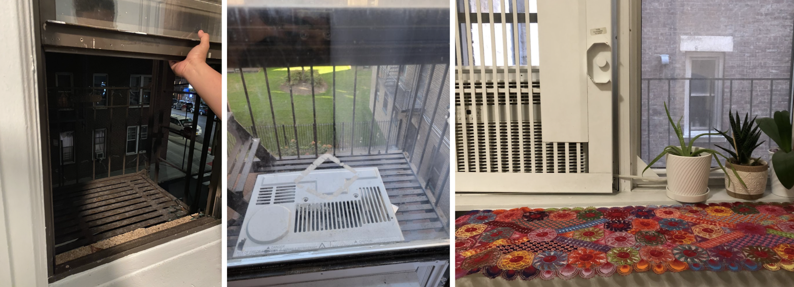
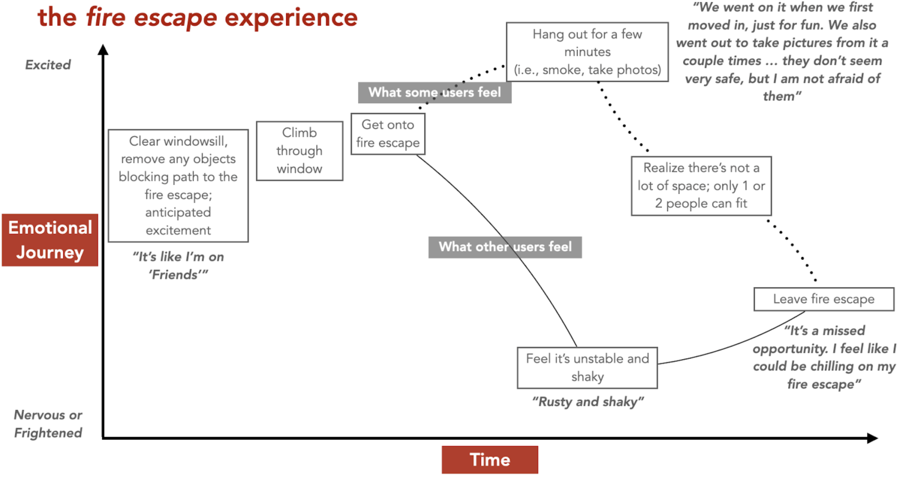

Fire escapes were built anywhere from 50 to 100 years ago (banned from being built after 1968) so most of them are rusted, frail, weathered, and weak. They failed all the time even in the early 20th century, but because they intended to solve the building safety problem they were considered “good enough” and kept being made. They are accident prone and many people fall to their deaths from them. They are even beginning to fall apart and can send dangerous debris falling down onto the busy city streets. Within the territory of housing safety we identified this as a clear opportunity area rich with the potential for effective solutions addressing many different problems.
There is an opportunity to help people who live in older NYC apartment buildings with fire escapes who need to feel safe (both physically and mentally) on their fire escape and want to take advantage of the space it offers them by developing an actually safe, sturdy, and reliable alternative
The people we spoke to felt one of two ways about the fire escape: afraid or not at all.
Those who were afraid:
The structure is rusty and thin - people felt like it was falling apart. We were told that the slacks and gaps in the flooring and stairs incited fear when looking down - people felt they could either fall through them, get caught in them, or drop things through them. Many were afraid of the fact that anyone can go down the fire escape from the roof or another floor and felt it was a serious privacy and security risk that made break-ins possible.
Those who didn’t feel a way about them:
Typically young people were not afraid of them, didn’t care to be out on the fire escape, or were willing to look past the escape’s flaws. They decorate them and use them to hang out or smoke with their friends. One person we interviewed even climbed through their own apartment window from the fire escape after they accidentally locked themselves out.
A notable insight we discovered was that regardless of whether or not people were conscious of the flaws of the fire escape, they felt compelled to use them. They are a part of the city’s culture - fire escapes are considered amenities by people looking for a place to live. They can provide additional space; an extension to the cramped apartments most people live in, outdoor space in the city is considered a luxury.
Most of the fear expressed about the structure was related to the condition they were in. Many of those people who expressed fear had never gone out onto their fire escape and never felt like doing so - the appearance of rust, multiple layers of weathered paint chipping away, thin iron slacks, and frail railings was enough to leave them praying that they will never be left without that choice to not use them in the event of an emergency.
People are prohibited from being out on the fire escapes except for in the event of an emergency, but it shouldn’t be this way. The space shouldn’t incite so much fear in people or potentially be so dangerous that people are advised against using them in any situation whatsoever.
This is why we made the ZScape.